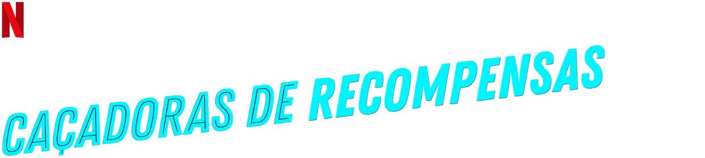
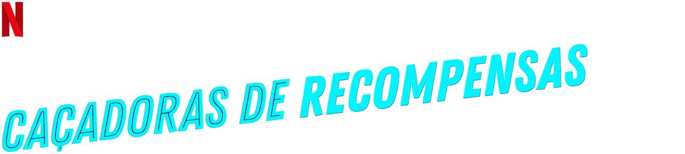

Caçadoras de Recompensas
Teenage Bounty Hunters é uma série de comédia e drama que foi lançada na Netflix em 2020. A trama segue duas irmãs gêmeas adolescentes, Sterling e Blair Wesley, que frequentam uma escola cristã. Um dia, por acaso, elas acabam se envolvendo em uma caçada de recompensas e decidem se tornar caçadoras de recompensas secretas enquanto continuam a levar suas vidas normais.
Ao longo da série, as irmãs enfrentam desafios ao tentar equilibrar suas vidas duplas e manter o segredo de suas atividades de caça recompensas. Enquanto perseguem criminosos, também exploram temas de identidade, amizade e relacionamentos familiares. A série combina elementos de ação, comédia e drama, oferecendo uma abordagem única ao gênero de caçadores de recompensas.
Sinopse
InicioDepois de amassar a caminhonete de seu pai, estudantes evangélicos do ensino médio e gêmeos fraternos Sterling e Blair Wesley caem na caça de recompensas pelo grisalho caçador de recompensas Bowser Jenkins para pagar pelo conserto da caminhonete, e sem o conhecimento de seus pais.
Lista de episódios de Caçadoras de Recompensas
Inicio| Temporada | Episódios | Estreia da temporada |
|---|---|---|
| 1 | 10 | 14 de agosto de 2020 |
1ª temporada
InicioA primeira temporada de "Teenage Bounty Hunters" segue as aventuras das irmãs gêmeas Sterling e Blair Wesley, que frequentam uma escola cristã. Após um acidente de carro, elas acabam se envolvendo em uma missão de captura de um fugitivo e, surpreendentemente, descobrem uma aptidão para serem caçadoras de recompensas.
Enquanto tentam manter suas atividades de caça recompensas em segredo, as irmãs lidam com os desafios típicos da adolescência, como relacionamentos, amizades e questões de identidade. Ao mesmo tempo, elas trabalham com o experiente caçador de recompensas Bowser Jenkins, que as guia através do mundo perigoso e desconhecido da captura de criminosos.
A série explora temas de moralidade, lealdade e autoconhecimento, enquanto as protagonistas equilibram suas vidas duplas e enfrentam dilemas éticos. Com humor e drama, "Teenage Bounty Hunters" oferece uma abordagem única e divertida ao gênero de caçadores de recompensas, proporcionando aos espectadores uma experiência envolvente e surpreendente.